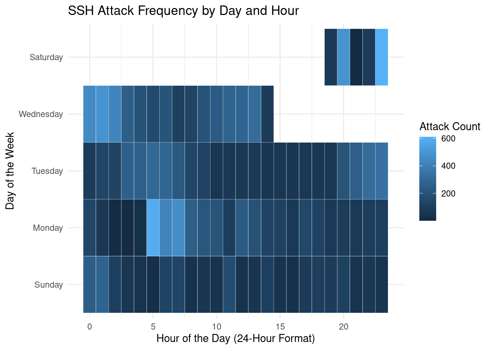
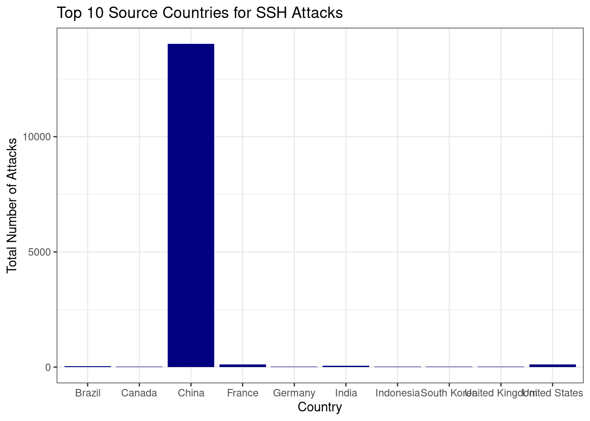
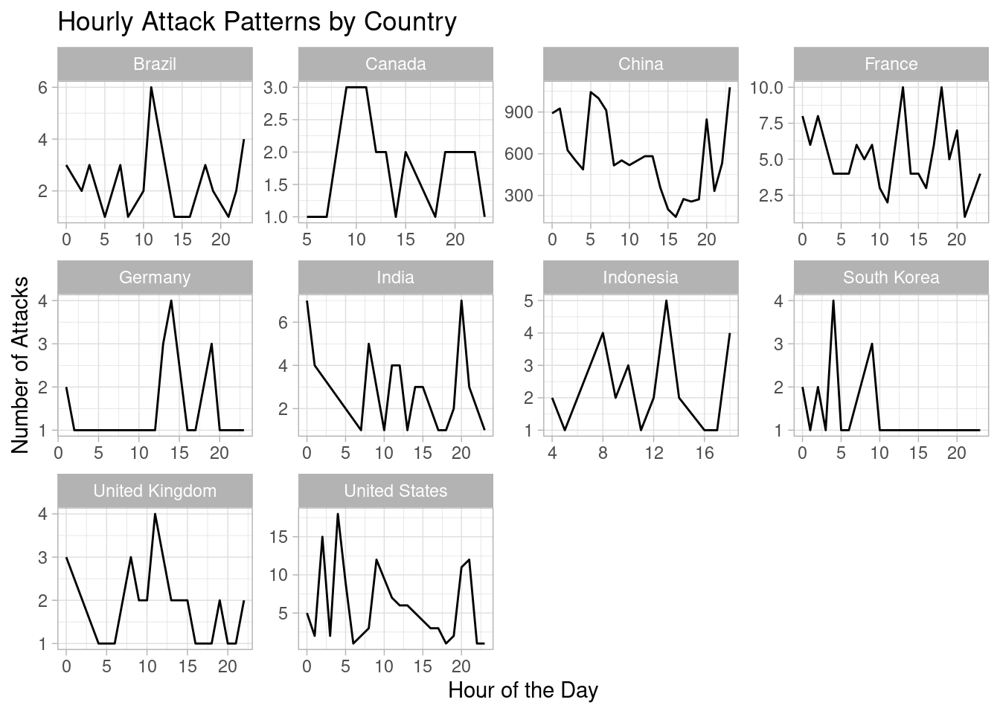
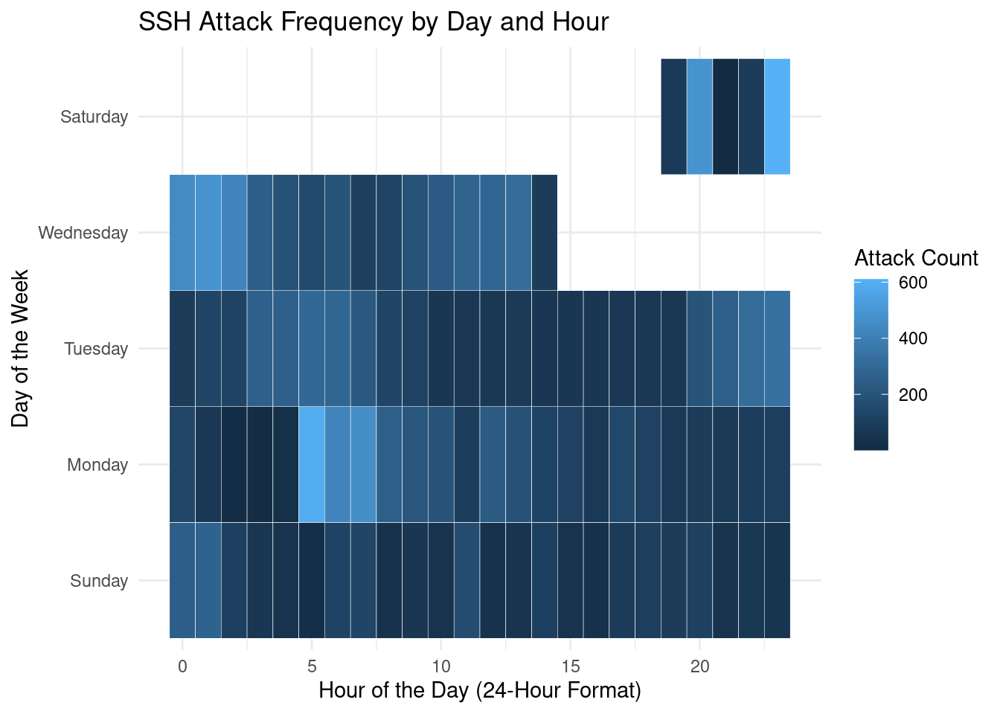
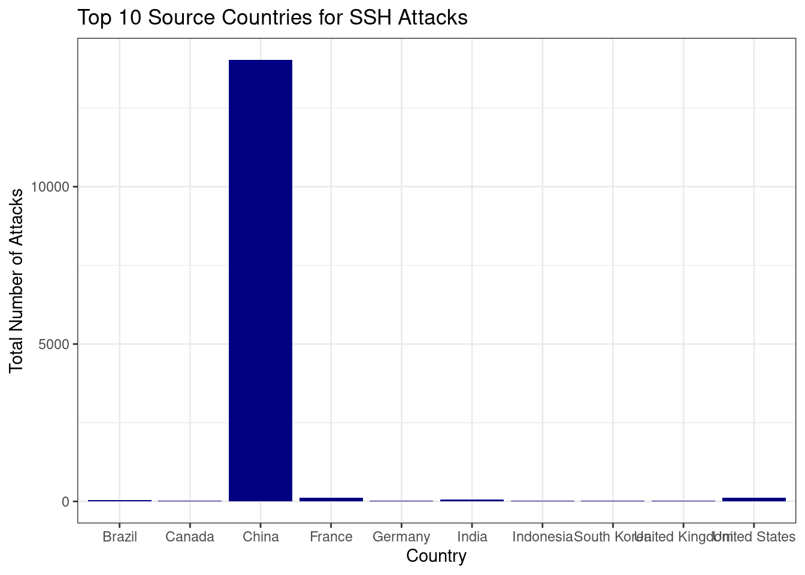
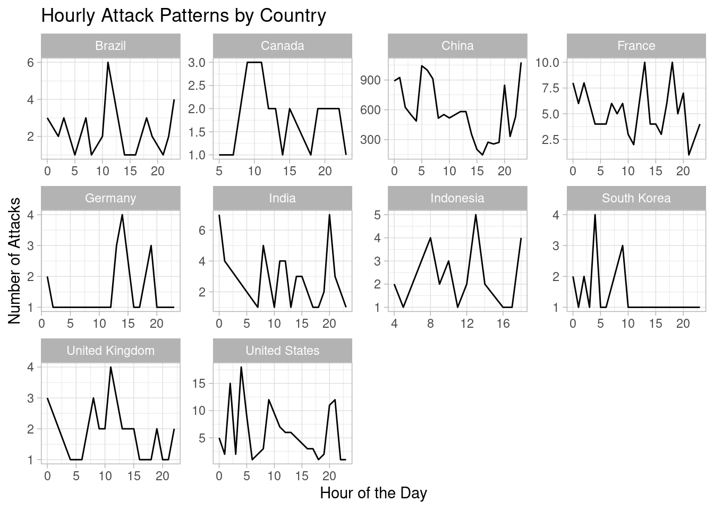

Yoz Calderon
August 7, 2025
My primary research questions are:
1. Do malicious login attempts follow predictable time-based patterns?
2. Do these attack patterns vary based on their geographical origin?
3. How will knowing this further our understanding of cybersecurity?
These questions are important because they shift cybersecurity from àpurely reactive stance to a more proactive one. Being able to identify when and from where attacks are mostly spawning from, organizations can increase their defensive resources, anticipate threats, and gain more knowledge on patterns on a global scale.
Predictions
I predict that the attacks will follow a pattern and there will be a clear relationship between time and attack frequency, that there will be more of a cluster at specific times.
What is the data source you will use to help you answer your question(s)?
I will use a public dataset of logs from a SSH honeypot server, which captured real-world malicious login attempts.
Approach
Data set
What is the source? The data is from a public Kaggle dataset named “SSH Brute-Force IP/User/Password,” containing logs generated by a SSH honeypot server.
How was the data collected? A honeypot—a decoy computer system—was intentionally exposed to the internet. The system was designed to attract and log all connection and login attempts made by automated bots and human attackers, capturing the details of their methods without risking a real system. There were other attempts not included here, which broadly fell into two categories: attempts with a key, and attempts that entered no username or password. This dataset only includes attempts using password authentication.
What are the variables included? The key variables are timestamp (when the attempt occurred), foreign_ip (the attacker’s source IP address), username, and passwords (the credentials used in the attempt).
How many records/rows/participants? The dataset contains approximately 14,800 individual login attempts.
Any other relevant information: The data is structured in a JSON format. To answer my research question, I will also use the external MaxMind GeoLite2 database to convert the attacker IP addresses into their country of origin.
Tools I will use R and RStudio running on Posit.Cloud for the analysis. Specific R packages will include:
jsonlite to load the JSON data.
dplyr for data cleaning and transformation.
lubridate to parse and manipulate timestamps.
rgeolocate to map IP addresses to countries.
ggplot2 to create all data visualizations.
Approach/Predictions
How, specifically, will you assess your question(s)?
I will examine the relationship between attack frequency and time by transforming the timestamp variable into hour_of_day and day_of_week and visualizing the counts in a heatmap.
After converting the foreign_ip variable into a country variable, I will filter for the top 10 attacking countries and create faceted plots to visually compare their distinct hourly attack distributions.
Repeat your predictions, but with more specificity.
I predict that the heatmap will show that the number of attacks in the peak hour of activity will be at least 5 times greater than the number of attacks in the lowest hour of activity.
I predict that when comparing the hourly attack patterns of the top two source countries, their primary peak activity hours will differ by at least 4 hours, indicating distinct operational schedules.
Results
The analysis of the SSH honeypot logs yielded clear answers to the primary research questions, revealing distinct patterns in attack timing and origin.
Time Based Patterns
The first research question asked if malicious login attempts follow predictable time-based patterns. The data confirms that they do. As shown in the heatmap below, attack frequency is not random but is heavily concentrated on specific days and times.
Activity was primarily clustered between Sunday and Wednesday, with a smaller, distinct block of attacks occurring on Saturday evening. Notably, there was a complete absence of logged attempts on Thursday and Friday, suggesting a non-continuous, scheduled nature for the attacks targeting this server.
My first prediction—that the peak hour’s attack count would be at least 5 times greater than the lowest hour’s—was not supported. The peak hour of activity saw approximately 900 attacks (driven by the source detailed below), while the lowest hour of consistent activity had roughly 300 attacks. This represents a threefold difference, which is significant but falls short of the predicted 5x magnitude.
Geographical Variation in Attack Patterns
The second research question asked if these patterns vary by geographical origin. The results show a dramatic variation. The source of attacks was found to be extremely concentrated, with China accounting for 14,028 (98.6%) of all attempts. This volume completely dwarfs the second-highest source, the United States, which registered only 124 attempts.
This dominance is also reflected in the hourly patterns. The plots below illustrate a contrast between the activity from China and that of other nations.
The pattern from China is a high-volume, persistent barrage, with hundreds of attacks occurring in any given hour. In contrast, the patterns from all other top countries are characterized by low-volume, sporadic attempts that rarely exceed 15 attacks per hour.
My second prediction—that the peak activity hours of the top two source countries would differ by at least 4 hours—was not supported. China exhibited multiple peaks, with a prominent one around hour 3. The United States showed a small peak around hour 5. This 2-hour difference did not meet the predicted 4-hour gap. The overwhelming volume from the top source makes a direct comparison of “operational schedules” with the much smaller secondary sources less meaningful.



Key Figure
Figure 1. Heatmap showcasing the attack frequency during a certain each day at a specific hour. Somehow there isn’t Thursday or Friday.
Figure 2. Bar graph showcasing the total number of attacks by country for the top ten countries.
Figure 3. Distribution of malicious SSH login attempts by hour of the day, broken down by the top ten source countries from Figure 2. Each panel represents a different country, showing its unique 24-hour attack pattern.
This investigation set out to determine if malicious SSH login attempts follow predictable time-based and geographical patterns. The analysis of the honeypot data confirms that they do, providing clear, actionable intelligence for strengthening cybersecurity defenses.
Conclusion
The answer to both research questions is a definitive yes.
Attacks are not random; they follow a highly structured schedule, concentrated on specific days of the week and hours of the day.
Attack patterns vary dramatically by origin. The threat landscape for this server was not a diverse global swarm but was dominated by a single, persistent, high-volume campaign from one nation, supplemented by minor, sporadic attacks from a handful of others.
The failure of the specific predictions does not diminish the overall findings. In fact, it sharpens the conclusion: the primary threat is a relentless, 24-hour operation from a single source, not competing campaigns operating on different schedules.
The strategic implication of these findings is profound. Defending against this server’s attackers does not require a generic, one-size-fits-all approach. Instead, a highly targeted, proactive strategy is possible:
Targeted Defense: Given that 98.6% of attacks originate from a single country, implementing geo-blocking is the single most effective defensive action that could be taken.
Efficient Resource Allocation: Security teams can heighten monitoring and adjust firewall scrutiny during the identified peak windows (Sunday-Wednesday) to catch anomalies more effectively.
It is important to acknowledge the limitations of this study. The findings are based on a single honeypot server and may not be generalizable to the entire internet. Furthermore, the complete absence of attacks on Thursday and Friday warrants further investigation with a longer-term dataset to determine if this is a consistent operational pause or an artifact of the data collection period.